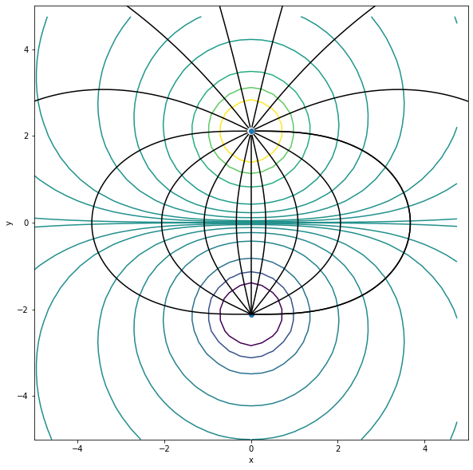
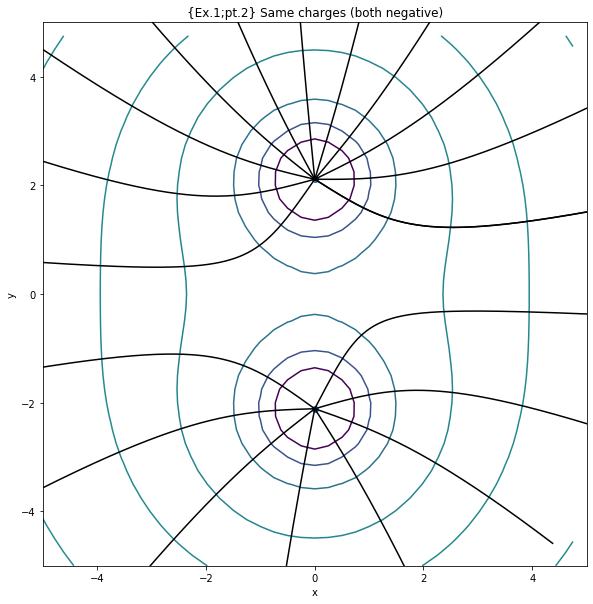
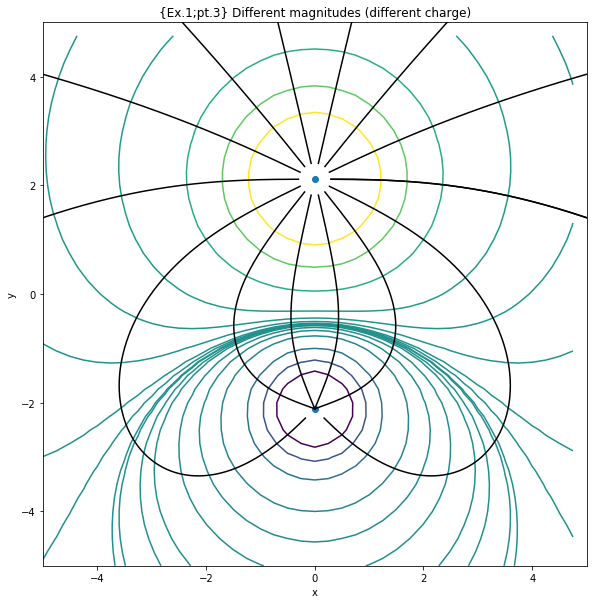
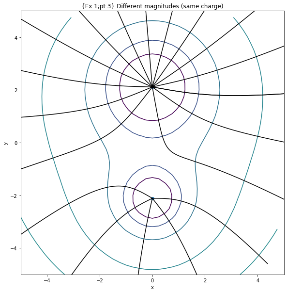
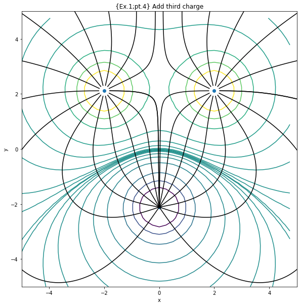
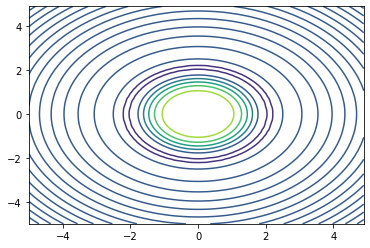
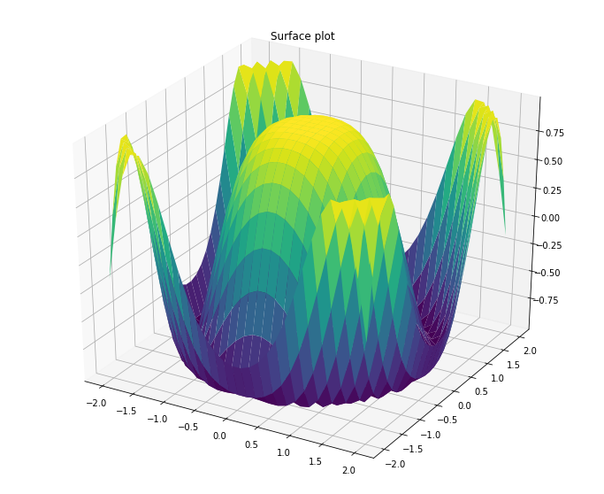
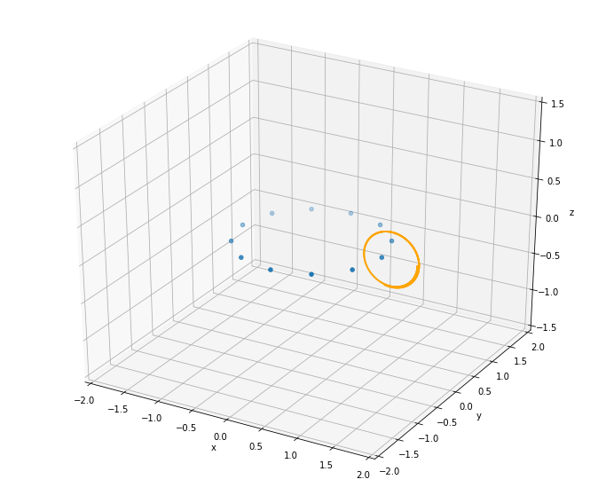
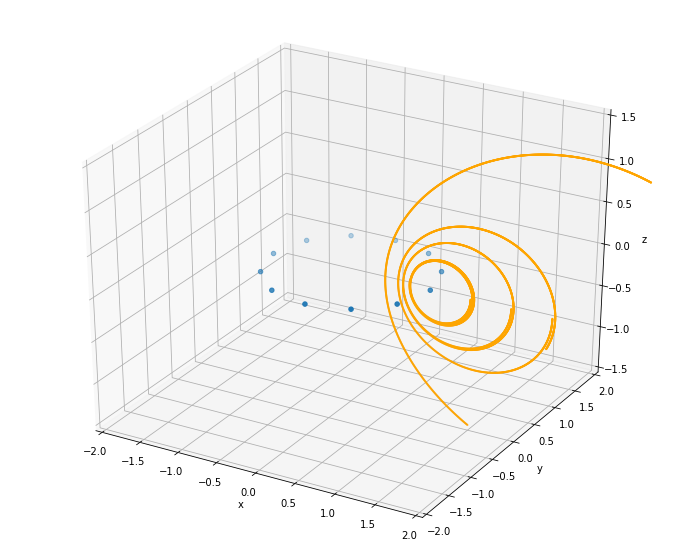

If we know the electric and magnetic fields (\({\rm \bf E}\), \({\rm \bf B}\)), then we can find the motion of a charged particle.
The electric and magnetic fields are governed by Maxwell’s equations which are linear, i.e., superposition of solutions is also a solution.
Electric fields
The electric field is given by \[\begin{equation*}
{\rm \bf E}({\rm \bf r}) = \frac{1}{4 \pi \epsilon_0} \sum_{i}^N \frac{q_i}{|{\rm \bf r} - {\rm \bf r}_i|^3}({\rm \bf r}-{\rm \bf r}_i)
\end{equation*}\] where \({\rm \bf r}_i\) is the fixed location of the \(i\)th charge.
Note that \({\rm \bf E}({\rm \bf r})\) is a vector field. At each point in space the field is characterized by a magnitude and direction.
Visualize by drawing arrows on a grid, representing direction. But how does one represent magnitude?
A better way to visualize a vector field is to draw electric field lines with the following properties:
An electric field line is a directed line whose tangent at every position is parallel to the electric field direction.
The lines are smooth and continuous except at singularities such as a point charge.
The total number of electric field lines emanating from a point change is proportional to the magnitude of that charge.
The algorithm for drawing field lines in two dimensions is:
Choose a starting point \((x,y)\) and compute \(E_x\) and \(E_y\).
Draw a small line segment of fixed length \(\Delta s\) in the direction of \({\rm \bf E}\). The components of the line segment are
\[\begin{equation*}
\Delta x = \Delta s \frac{E_{x}}{|{\rm \bf E}|} {~~~~\rm and~~~~}
\Delta y = \Delta s \frac{E_{y}}{|{\rm \bf E}|}
\end{equation*}\]
Repeat the process beginning at a new point (\(x + \Delta x, y + \Delta y)\). Continue until the field line moves to off toward infinity or until it approaches a negative charge.
We know that it is often easier to analyze the behavior of a charge distribution using energy rather than force concepts.
The surface on which the electric field has an equal value everywhere is called an equipotential surface.
The electric field lines are orthogonal to the equipotential surfaces at any point.
Exercise 1:
Examine and comment the code below. Draw electric field lines (e.g., 10-20 lines) for two opposite charges. It is important that the density of field lines near the source be uniform so that the density of field lines elsewhere is indicative of field strength. You are welcome to use physical units, but for simplicity set \(q/(4 \pi \epsilon_0) = \pm 1\). It is also important to place the charges away from grid points to avoid division by zero errors in the potential calculation.
Draw field lines for particles with the same charge.
Experiment with charges of different magnitudes.
Add a third charge.
import numpy as npimport matplotlib.pyplot as pltfrom mpl_toolkits.mplot3d import Axes3D# Electric fieldclass electric_field():def__init__(self,N,delta,nsteps):self.N = N #number of charges self.x1 = np.zeros(N) #coordinates of current segmentsself.y1 = np.zeros(N)self.q = np.ones(N) #Charges (array of ones (one for each of the particles))self.delta = delta #delta s?self.nsteps = nstepsdef configure_charges(e): #specify varibles to handle name "e" e.q[0] =1.0#Charge 1 e.q[1] =-1.0#Charge 2 (opposite charge as charge 1) e.y1[0] =2.111#charge 1 y-coordinate e.x1[0] =0.0 e.y1[1] =-2.111#charge 2 y-coordinate (opposite direction of charge 1) e.x1[1] =0.0def get_E(e,r): #r = coordinates of point in question E = np.zeros(2)for i inrange(2): x2 = r[0] - e.x1[i] #components of vector from current source to point in question y2 = r[1] - e.y1[i] r2 = np.sqrt(x2**2+ y2**2) E0 = e.q[i]/(r2**3) E[0] += E0*x2 E[1] += E0*y2return Edef plot_E_field(e,px,py): #plotting function that is used in trace_E function ax.plot(px,py,color='black') ax.set_xlabel('x') ax.set_ylabel('y') ax.set_xlim(-5,5) ax.set_ylim(-5,5)def plot_potential(e): x = np.arange(-5, 5, 0.25) y = np.arange(-5, 5, 0.25) xx, yy = np.meshgrid(x, y, sparse=True) x1 = e.x1[0] #location of charge 1 y1 = e.y1[0] r12 = (xx - x1)**2+ (yy - y1)**2 Vofr = e.q[0]/r12 x1 = e.x1[1] #location of charge 2 y1 = e.y1[1] r12 = (xx - x1)**2+ (yy - y1)**2 Vofr += e.q[1]/r12 lev = np.array([1e-3,1e-2,1/50,1/20.,1/10.,1/5.,1/2.,1.0,2.0]) lev = np.append(-np.flip(lev),lev) ax.contour(x,y,Vofr,lev)def trace_E(e,r): px = [] py = [] px.append(r[0]) #Coordinates of r broken into px and py py.append(r[1])for _ inrange(e.nsteps): E = get_E(e,r) #E = (E_x,E_y) Emag = np.sqrt(np.dot(E,E)) #magnitude of E (np.dot = dot product of two arrays) r += e.delta*E/Emag #part 2 of "algorithm for drawing field lines in 2D" (both x & y combined) px.append(r[0]) #(x + delta(x)) py.append(r[1]) #(y + delta(y)) plot_E_field(e,px,py)#--------------------------------------------------------------------N =2#2 charged particlesdelta =0.01nsteps =1000e = electric_field(N,delta,nsteps)configure_charges(e)fig = plt.figure()fig = plt.figure(figsize=(12,10))ax = fig.add_subplot(111)ax.plot(e.x1,e.y1,'o') #plots both charge 1 & 2 ax.set_xlabel('x')ax.set_ylabel('y')ax.set_aspect('equal')plot_potential(e)#Exercise 1; part 1:Drawing Electric Field Linesr = [0,2]trace_E(e,r)##=================================# lines = 15# xr = []# yr = []# for j in range(lines):# xr.append(something)# yr.append(something)# for k in range(len(xr)):# r = np.array([xr[k],yr[k]])# trace_E(e,r)##==================================#(Mostly came from the solution Delamere accidentally showed us on Weds (4/15))lines =15theta = np.linspace(0,2*np.pi,lines)factor =0.1[xr,yr] = [factor*np.cos(theta) + e.x1[0], factor*np.sin(theta) + e.y1[0]] for j inrange(len(xr)): r = [xr[j],yr[j]] trace_E(e,r)
<Figure size 432x288 with 0 Axes>

JK note on Ex.1; part 1:
So, I will admit that the working solution did definitely come from what you accidentally showed on the zoom recording on Wednesday (4/15), but I am pretty sure that I would not have been able to come up with most of it on my own (or even if I did it would’ve taken a lot longer). So, instead of just blindly using an answer that I know I wouldn’t have thought of on my own and for my learning benefit, I decided to do two things:
Leave the basic outline of what I would’ve done if I didn’t look at the recorded solution, to keep for comparison.
I also mostly looked at the recording to figure out what I needed to replace the “something” with in the loop with the append functions, but I ended up keeping Delamere solution because of the shortness of the code required.
I know I wouldn’t have thought of making the (x & y) variables an array/list without appending in a loop
Try to understand why the solution works the way it does
So I know that in the plot the electric field lines essentially come from charge 2 (negative charge at (0,-2.111)) and point toward charge 1 (positive charge at (0,+2.111)), so that’s why the r coordinates had to be close to charge 1 (thus the + e.x1[0] and + e.y1[0] part, for xr and yr respectively). (Although I think they are supposed to go from postive to negative, but I didn’t want to mess with that part of the code. Or I’m interpreting the charges incorrectly.)
I don’t think I would’ve thought of using sine and cosine
But after looking at it, I believe it makes sense because it’s easier to make any number of lines and keep the “r” distance from charge 1 to be relatively reasonable. And maybe the orthogonality between sine and cosine is the reason why their proportionality works out for using them respectively for y and x (using cosine for x and sine for y, makes me think of the unit circle also).
(And the factor multiplied to the sine and cosine determines how close point “r” is to charge 1.)
#Exercise 1; part 2: Field lines for particles w/ same chargesconfigure_charges(e)e.q[0] =-1.0#both charges = negative#same graphing as given--fig = plt.figure()fig = plt.figure(figsize=(12,10))ax = fig.add_subplot(111)ax.plot(e.x1,e.y1,'o') #plots both charge 1 & 2 ax.set_xlabel('x')ax.set_ylabel('y')ax.set_aspect('equal')plot_potential(e)#---------------------ax.set_title("{Ex.1;pt.2} Same charges (both negative)")lines =20theta = np.linspace(0,2*np.pi,lines)factor =8[xr,yr] = [factor*np.cos(theta) + e.x1[0], factor*np.sin(theta) + e.y1[0]] for j inrange(len(xr)): r = [xr[j],yr[j]] trace_E(e,r)
<Figure size 432x288 with 0 Axes>

#Exercise 1; part 3: Experiment with charges of different magnitudes#different charges-----------------------------------------------------------------------------------------------------configure_charges(e)e.q[0] =3.0#charge 1 = different magnitude; different charges#same as graphing as given--fig = plt.figure(1)fig = plt.figure(figsize=(12,10))ax = fig.add_subplot(111)ax.plot(e.x1,e.y1,'o') #plots both charge 1 & 2 ax.set_xlabel('x')ax.set_ylabel('y')ax.set_aspect('equal')plot_potential(e)#---------------------ax.set_title("{Ex.1;pt.3} Different magnitudes (different charge)")lines =15theta = np.linspace(0,2*np.pi,lines)factor =0.3[xr,yr] = [factor*np.cos(theta) + e.x1[0], factor*np.sin(theta) + e.y1[0]] for j inrange(len(xr)): r = [xr[j],yr[j]] trace_E(e,r)#Same charges----------------------------------------------------------------------------------------------------------configure_charges(e)e.q[0] =-3.0#charge 1 = different magnitude; both charges = negative#same as graphing as given--fig = plt.figure(2)fig = plt.figure(figsize=(12,10))ax = fig.add_subplot(111)ax.plot(e.x1,e.y1,'o') #plots both charge 1 & 2 ax.set_xlabel('x')ax.set_ylabel('y')ax.set_aspect('equal')plot_potential(e)#---------------------ax.set_title("{Ex.1;pt.3} Different magnitudes (same charge)")lines =20theta = np.linspace(0,2*np.pi,lines)factor =8[xr,yr] = [factor*np.cos(theta) + e.x1[0], factor*np.sin(theta) + e.y1[0]] for j inrange(len(xr)): r = [xr[j],yr[j]] trace_E(e,r)
<Figure size 432x288 with 0 Axes>


#Exercise 1; part 4: Add a third chargeN =3nsteps =2500e = electric_field(N,delta,nsteps)configure_charges(e)e.q[0] =1.0#Charge 1e.q[1] =-1.0#Charge 2 (opposite charge as charge 1)e.q[2] =1.0#Charge 3e.y1[0] =2.111#charge 1 y-coordinatee.x1[0] =2.0e.y1[1] =-2.111#charge 2 y-coordinate (opposite direction of charge 1)e.x1[1] =0.0e.x1[2] =-2.0e.y1[2] =2.111def plot_potential(e): x = np.arange(-5, 5, 0.25) y = np.arange(-5, 5, 0.25) xx, yy = np.meshgrid(x, y, sparse=True) x1 = e.x1[0] #location of charge 1 y1 = e.y1[0] r12 = (xx - x1)**2+ (yy - y1)**2 Vofr = e.q[0]/r12 x1 = e.x1[1] #location of charge 2 y1 = e.y1[1] r12 = (xx - x1)**2+ (yy - y1)**2 Vofr += e.q[1]/r12 x1 = e.x1[2] #location of charge 3 y1 = e.y1[2] r12 = (xx - x1)**2+ (yy - y1)**2 Vofr += e.q[2]/r12 lev = np.array([1e-3,1e-2,1/50,1/20.,1/10.,1/5.,1/2.,1.0,2.0]) lev = np.append(-np.flip(lev),lev) ax.contour(x,y,Vofr,lev)#same as graphing as given--fig = plt.figure()fig = plt.figure(figsize=(12,10))ax = fig.add_subplot(111)ax.plot(e.x1,e.y1,'o') #plots both charge 1 & 2 ax.set_xlabel('x')ax.set_ylabel('y')ax.set_aspect('equal')plot_potential(e)#---------------------ax.set_title("{Ex.1;pt.4} Add third charge")#Changing get_E function to work for 3 chargesdef get_E(e,r): #r = coordinates of point in question E = np.zeros(2)for i inrange(3): #Changing to 2 to 3 was pretty much the only change I made x2 = r[0] - e.x1[i] #components of vector from current source to point in question y2 = r[1] - e.y1[i] r2 = np.sqrt(x2**2+ y2**2) E0 = e.q[i]/(r2**3) E[0] += E0*x2 E[1] += E0*y2return E#Plotting Electric field (Not sure if I had to, but it looks pretty cool so I kept it)lines =15theta = np.linspace(0,2*np.pi,lines)factor =0.2[xr,yr] = [factor*np.cos(theta) + e.x1[0], factor*np.sin(theta) + e.y1[0]] for j inrange(len(xr)): r = [xr[j],yr[j]] trace_E(e,r)[xr,yr] = [factor*np.cos(theta) + e.x1[2], factor*np.sin(theta) + e.y1[2]] for j inrange(len(xr)): r = [xr[j],yr[j]] trace_E(e,r)
<Figure size 432x288 with 0 Axes>

Laplace’s equation
In a region free of charges, \(\boldsymbol{\nabla} \cdot {\rm \bf E} =
\rho/\epsilon_0 = 0\). Laplace’s equation is
That is, \(V(x,y)\) is the average of the neighboring cells to the right, left, up, and down.
Exercise 2:
Write program to solve Laplace’s equation in two dimensions with \(0 < x < L\) and \(0 < y < L\). Let \(V(x=0,y) = 10.0\) and all other boundaries set to the potential to zero, i.e., \(V(x=L,y) = V(x,y=0) = V(x,y=L) = 0\). It might be helpful to define the boundary conditions in buffer cells so the actual domain has indices \(1 < i < N-2\) and \(1 < j < N-2\). Let \(\Delta x = \Delta y = L/N\) and set the initial potential in the domain to zero.
How many iterations are required to reach equilibrium?
JK note: I initially skipped exercise 2 and went to exercise 3 first, but now I ran out of time to try exercise 2 so I will submit like this. (I still did exercise 3 though)
# The following sample code produces x and y arrays on a square grid and plots contours and surfaces...# Just for your reference!x = np.arange(-5, 5, 0.1)y = np.arange(-5, 5, 0.1)xx, yy = np.meshgrid(x, y, sparse=True)z = np.sin(xx**2+ yy**2) / (xx**2+ yy**2)h = plt.contour(x,y,z)plt.show()x = np.outer(np.linspace(-2, 2, 30), np.ones(30))y = x.copy().T # transposez = np.cos(x **2+ y **2)fig = plt.figure()fig = plt.figure(figsize=(12,10))ax = plt.axes(projection='3d')ax.plot_surface(x, y, z,cmap='viridis', edgecolor='none')ax.set_title('Surface plot')plt.show()

<Figure size 432x288 with 0 Axes>

Magnetic fields
For static current systems, the magnetic field is given by the Biot-Savart law
where \(\Delta {\rm \bf B}({\rm \bf r})\) is the magnetic field at point \({\rm \bf r}\) due to a segment of wire \(\Delta {\rm \bf L}\) which carries a current \(I\) and \({\rm \bf r}^\prime\) is the vector from the \(j\)th wire segment to \({\rm \bf r}\), i.e., \({\rm \bf r}^\prime = {\rm \bf r} - {\rm \bf r}_j\). - Of course there are no isolated currents and a wire must be either a closed loop or sufficiently long that the contributions from the end points are negligible. - We can approximate a continuous wire by a series of discrete segments. For the \(j\)th segment, the magnetic field at \({\rm \bf r}\) is
where \(|{\rm \bf r} - {\rm \bf r}_j|^3 = [(x - x_j)^2 + (y - y_j)^2 + (z - z_j)^2]^{3/2}\)
Exercise 3
Examine and comment the code below.
Plot a single field line starting at \(r = [1.5,0,0]\). Adjust the tracing parameters, N, delta and nsteps, until you are satisfied with the result. Explain each parameter.
Plot a collection of field lines to illustrate the overall topology of the magnetic field.
Does the magnitude of the current affect the result? Explain.
No, magnitude of current does not affect the result as long as it is constant (I think).
import numpy as npimport matplotlib.pyplot as pltfrom mpl_toolkits.mplot3d import Axes3Dclass magnetic_field: #bucket for related variables...in other languages, this is a data structure.def__init__(self,N,radius,I,delta,nsteps):self.N = N #Number of "dots"self.radius = radiusself.I = I #I = Currentself.dLx = np.zeros(N)self.dLy = np.zeros(N)self.dLz = np.zeros(N)self.x1 = np.zeros(N) #coordinates of current segmentsself.y1 = np.zeros(N)self.z1 = np.zeros(N)self.delta = delta #size of each coordinate step (literal "delta" of delta x, delta y, etc.)self.nsteps = nstepsdef wire(b): dtheta =2*np.pi/b.N dL =2*np.pi*b.radius/b.N theta = np.arange(0,2*np.pi,dtheta) b.x1 = b.radius*np.cos(theta) #coordinates of wire segment b.z1 = np.zeros(b.N) b.y1 = b.radius*np.sin(theta) b.dLx =-dL*np.sin(theta) #dL broken into x,y,&z components b.dLz = np.zeros(b.N) b.dLy = dL*np.cos(theta) return#def plot_wire(b):# plt.plot(b.x1,b.z1,'o')# plt.show()def get_B(b,r): #r = coordinates of point in question mu0 = np.pi*4e-7 B = np.zeros(3)for i inrange(b.N): x2 = r[0] - b.x1[i] #components of vector from current source to point in question y2 = r[1] - b.y1[i] z2 = r[2] - b.z1[i] r2 = np.sqrt(x2**2+ y2**2+ z2**2) B0 = mu0*b.I/(4*np.pi*r2**3) B[0] += B0*(b.dLy[i]*z2 - b.dLz[i]*y2) B[1] += B0*(b.dLz[i]*x2 - b.dLx[i]*z2) B[2] += B0*(b.dLx[i]*y2 - b.dLy[i]*x2) return Bdef plot_B_field(b,px,py,pz): ax.scatter(px,py,pz,s=1,color='orange') ax.set_xlabel('x') ax.set_ylabel('y') ax.set_zlabel('z') ax.set_xlim(-2,2) ax.set_ylim(-2,2) ax.set_zlim(-1.5,1.5) plt.savefig('bfield.png')def trace(b,r): px = [] py = [] pz = [] px.append(r[0]) py.append(r[1]) pz.append(r[2])for _ inrange(b.nsteps): B = get_B(b,r) Bmag = np.sqrt(np.dot(B,B)) r += b.delta*B/Bmag px.append(r[0]) py.append(r[1]) pz.append(r[2]) plot_B_field(b,px,py,pz)#---------------------------------------------------------------------#Exercise 3; Part 2: Plot single field line (r = [1.5,0,0]) and adjust parameterN =12#number of "dots" #originally: 12radius =1.0I =1.0#ampdelta =0.003#size each coordinate step #originally: 0.01nsteps =1000#number of steps #originally: 500b = magnetic_field(N,radius,I,delta,nsteps)wire(b)fig = plt.figure()fig = plt.figure(figsize=(12,10))ax = fig.add_subplot(111, projection='3d')ax.scatter(b.x1,b.y1,b.z1)r = [1.5,0,0]trace(b,r)
<Figure size 432x288 with 0 Axes>

#Exercise 3; Part 3: Plot collection of field lines to illustrate overall topology of Magnetic FieldN =12#number of "dots" #originally: 12radius =1.0I =1.0#ampdelta =0.003#size each coordinate step #originally: 0.01nsteps =2000#number of steps #originally: 500b = magnetic_field(N,radius,I,delta,nsteps)wire(b)fig = plt.figure()fig = plt.figure(figsize=(12,10))ax = fig.add_subplot(111, projection='3d')ax.scatter(b.x1,b.y1,b.z1)r = [1.5,0,0]trace(b,r)for M inrange(2): r[0] +=0.5 trace(b,r)r = [1.5,0,-1.5]trace(b,r)
<Figure size 432x288 with 0 Axes>

#Exercise 3; Part 4: Magnitude of current#OriginalN =12#number of "dots" #originally: 12radius =1.0I =1.0#ampdelta =0.003#size each coordinate step #originally: 0.01nsteps =1000#number of steps #originally: 500b = magnetic_field(N,radius,I,delta,nsteps)wire(b)fig = plt.figure(1)fig = plt.figure(figsize=(12,10))ax = fig.add_subplot(111, projection='3d')ax.scatter(b.x1,b.y1,b.z1)ax.set_title("Original (I = 1.0 amp)")r = [1.5,0,0]trace(b,r)#Changed Magnitude of currentI =1000.0#ampb = magnetic_field(N,radius,I,delta,nsteps)wire(b)fig = plt.figure(2)fig = plt.figure(figsize=(12,10))ax = fig.add_subplot(111, projection='3d')ax.scatter(b.x1,b.y1,b.z1)ax.set_title("I = "+str(I)+" amp")r = [1.5,0,0]trace(b,r)